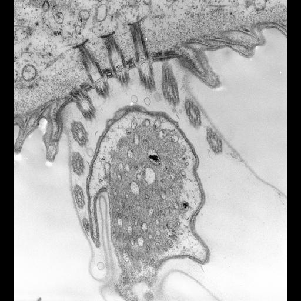

Stalk spasmoneme
An intracellular contractile fibrillar organelle within the stalk of contractile-stalk peritrich ciliates. A spasmin-rich fibrillar mass is interspersed with membrane-bounded tubules. Shortening deforms the surrounding stalk; the organelle is distinct from the extracellular sheath and from the continuous body myoneme network. [DOI:10.1083/jcb.77.2.358]

NCBITaxon:60850) · Richard Allen (University of Hawaii); via Cell Image Library · PUBLIC_DOMAIN · source: CELL_IMAGE_LIBRARY CIL:39509 · DOI:10.7295/W9CIL39509Synonyms: vorticellid spasmoneme; stalk myoneme; spasmoneme
Components
| Component | Type | Part of / acts on | Grounding | Genes | Stoichiometry | Essential | Role |
|---|---|---|---|---|---|---|---|
| Centrin/spasmin-family proteins | Protein | part of | Reviewed label only (reviewed name; no accession asserted) | UNKNOWN | Calcium-binding constituents of the stalk contractile organelle. This combined family-level class does not assert one gene product, an exhaustive inventory, native filament sufficiency or individual assembly requirements.
|
Canonical examples
NCBITaxon:60850Vorticella convallaria — Live-cell microfluidic experiments characterize load-dependent stalk contraction. Separately cited CIL:39509 provides imaging of this species. No strain CURIE or genus-wide prevalence is asserted. [DOI:10.1016/j.bpj.2012.07.038]NCBITaxon:168244Carchesium polypinum — Species used for cultured, denuded-stalk protein preparations and calcium-dependent assays; not a claim about all colonial peritrichs. [DOI:10.1083/jcb.77.2.358]
Functions
- Calcium-responsive stalk contraction — Spasmoneme shortening drives deformation of the surrounding stalk and retraction of the attached cell body. Geometry and external resistance affect the observed movement; no universal contraction speed or force is asserted.
DOI:10.1083/jcb.77.2.358Glycerinated preparations respond reversibly to calcium exposure and removal.DOI:10.1016/j.bpj.2012.07.038Greater imposed viscous resistance slows live V. convallaria contraction and reduces its excursion. Force values require hydrodynamic inference and extrapolation.
Mechanism graphs
Observed stalk contractile response (FUNCTION)
Qualitative organelle-level response, not a resolved molecular motor cycle.
| Subject | Predicate | Object | Evidence |
|---|---|---|---|
| Calcium exposure of glycerinated preparations | elicits | Spasmoneme shortening |
|
| Spasmoneme shortening | drives | Stalk deformation and cell-body retraction |
|
| Imposed viscous resistance in live Vorticella | slows and limits | Stalk deformation and cell-body retraction |
|
Discussions
- CURATION_TODO (RESOLVED): Separate the stalk organelle from body myonemes and the complete stalk. Continuity, related proteins and historical terminology do not make these structures identical.
- CURATION_TODO (OPEN): Resolve the native constituent inventory, exact family groundings and proposed scaffold partners. Protein enrichment and chemical perturbation do not establish a complete molecular assembly.
- CURATION_TODO (RESOLVED): Preserve antibody specificity and sample-preparation limits. Compartment labeling cannot be treated as an isoform-specific native molecular reconstruction.
- CURATION_TODO (RESOLVED): Keep the extracellular sheath and unresolved calcium-handling machinery outside the molecular component list. An observed compartment or neighboring structure is not an identified protein family.
- CURATION_TODO (OPEN): Resolve the native contraction and recovery mechanism without promoting physical models to molecular observations. Measured displacement, inferred force and simulated motor arrangements answer different questions.
- CURATION_TODO (OPEN): Resolve the historical Zoothamnium geniculatum name at a taxonomic authority. A historical experimental organism must not receive a guessed modern taxon identifier.
- CURATION_TODO (RESOLVED): Keep the source preview distinct from quantitative microscopy and protein-specific localization. An unlabeled TEM preview cannot establish protein identity, calcium transport or calibrated dimensions.
Evidence
DOI:10.1083/jcb.77.2.358Routledge (1978). Read the full 13-page primary PDF, including Methods, Results, Discussion and legends. Versioned PMC2110051.1 PDF checksum verified; JATS has only abstract and reference text.DOI:10.1111/j.1550-7408.1999.tb04601.xMaciejewski et al. (1999). PubMed/Europe PMC abstract and identity verified; the available full-text route is subscription-only.https://ilacadofsci.com/wp-content/uploads/2013/03/102-15MS2905-print.pdfKonior, McCutcheon and Buhse (2009), Transactions of the Illinois State Academy of Science 102:161-174. Read all main text and figure legends in the publisher-hosted PDF.DOI:10.1016/j.bpj.2012.07.038Ryu, Lang and Matsudaira (2012). Read the complete eight-page author-hosted article, not its Supporting Material.DOI:10.1111/j.1550-7408.1998.tb05066.xAsai et al. (1998). Publisher abstract read; no claim to have read full experimental methods.DOI:10.1111/jeu.70006Jiang et al. (2025). Primary abstract and metadata read; complete publisher text was not accessible through the checked routes.DOI:10.7295/W9CIL39509Single-item CIL metadata and unmodified preview inspected; public-domain dedication, author, organism and source-served preview verified.GO:0005622Verified non-obsolete intracellular anatomical structure, used only as a broad is-a parent.
Curation history
2026-10-03T22:30:52Zcodex · CREATED_RECORD — Scaffolded by scripts/new_record.py2026-10-03T22:33:02Zcodex · EXPANDED_RECORD — Added primary evidence, a source-neutral centrin/spasmin class, verified examples, scoped functional response graph, assay/model/taxon limits and a checksum-verified public-domain CIL preview.2026-10-03T22:50:29Zcodex · CORRECTED_EVIDENCE_SCOPE — Addressed issue #2002: distinguish abstract-supported stalk CCDC/EGF-like membership from CCDC-specific sheath localization; preserve the spasmoneme exclusion, discussion rationale and dates.